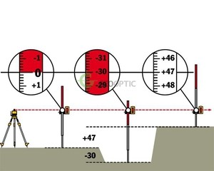

-

8(0152)31-25-61
-

kst@ggkst.by
-

http://ggkst.by
8(0152)31-25-61
kst@ggkst.by
http://ggkst.by
Инструменты и приспособления
Инструменты, приспособления, машины и механизмы для производства плиточных
Все основные подготовительные работы выполняют с помощью ручных машин (механизированного инструмента), инструментов, приспособлений и инвентаря.
наименование инструмента

1. Скребок
Очищение поверхностей от подтёков раствора и грязи с каменных и бетонных поверхностей

2. Молоток
Скалывание выпуклостей и бугров с поверхности

3. Скарпель

4. Цикля
Удаление выступающих неровностей с поверхности гипсобетонных поверхностей

5. Шпатель
Выравнивание мелких неровностей поверхности растворной смесью

6. Бучарда
Выполнение насечки бетонных и других поверхностей

7. Пневматический молоток
Выполнение насечки вертикальных поверхностей

8. Гладилка Заглаживание уложенной растворной смеси

9. Строительный пылесос
Удаление мусора и пыли с оснований, подготовленных под укладку плитки

10. Правило
Проверка вертикальности основания

11. Гибкий водяной уровень
Определение отклонений в расположении горизонтальных поверхностей, перенесение геодезической отметки в больших помещениях на противоположную или другую часть стены

12. Строительный нож
Прирезка рулонной гидроизоляции, линолеума, плиток ПВХ

13. Молоток плиточника
Скалывание и подтёска кромок керамических плиток

14. Кельма
Заделка раствором глубоких впадин в основание, нанесение клеящей смеси на плитку

15. Наждачный камень
Обработка неровных краёв плитки

16. Линейка-шаблон
Измерение неполномерных плиток по прямой или диагональной линии

17. Клещи
Обламывание края плитки и откалывание круглых отверстий в плитке

18. Плиткорез ручной
Резка плиток
Необходимый набор механизмов, инструментов, приспособлений и инвентаря, рассчитанный на бригаду и предназначенный для выполнения основных и вспомогательных работ, называют технологическим норкомплектом. Количество механизмов, инструментов и приспособлений, включенных в нормокомплект, принимают с учетом вида работ, численного и квалификационного состава бригады. Оснащение бригад рабочих нормоком-плектом способствует повышению качества и производительности труда при облицовочных и мозаичных работах.
Виды строительных уровней
При ремонте квартиры вам обязательно понадобятся измерительные инструменты. Такие как рулетка, уровень или угольник. Очень важно уметь правильно ими пользоваться. При сложных отделочных работах вам пригодятся все перечисленные модели.
Пузырьковый уровень
Самый простой вид строительного уровня – пузырьковый. Свое название он получил из-за пузырька воздуха находящегося в колбе с жидкостью. Именно по нему проверяется ровность как горизонтальных, так и вертикальных линий. В последнем случае уровень вполне способен заменить собой отвес (груз на капроновом шнуре или леске).
Используется пузырьковый уровень практически при любых отделочных операциях. Например, при оклейке стен обоями, им контролируют правильность выставления первого листа.
Также его применяют при разметке потолка из гипсокартона. Хотя если помещение большое и имеет немалое количество внешних и внутренних углов, лучше всего воспользоваться гидроуровнем. Разметка получится более точной и что не менее важно, займет не так много времени.
Водяной уровень
Или как его еще называют гидроуровень. Он представляет собой две колбы, соединенные между собой прозрачным силиконовым шлангом. Как мы уже отметили, плюс водяного уровня в его точности. Им легко обмерить не только отдельную квартиру, но и всю квартиру целиком. Да что там квартиру! Этим достаточно примитивным инструментом вполне можно построить трехэтажный коттедж с эркерами, пилястрами и балконами без каких-либо отклонений от нормы.
Тем не менее, водяной уровень имеет существенные недостатки. Некоторые из них мы перечислили ниже.
Для работы с гидроуровнем требуется напарник. Первый выставляет по предыдущей отметке, второй отмеряет новую.
Перед началом измерений гидроуровень необходимо привести в рабочее состояние: аккуратно заполнить водой, так чтобы не образовались пузырьки воздуха.
Если последние все-таки имеются, точность измерений будет не слишком высокой.
Водяной уровень нужно правильно хранить: освобождать от воды, вешать на крепежи в вертикальном положении без изломов и вдали от острых предметов.
Лазерный уровень
Существует ли строительный уровень, не имеющий перечисленных недостатков? Да! Современная и практичная модель называется лазерный уровень. Стрелять из него, конечно, не получится, зато точность и удобство на высоте.
Лазерным уровнем легко обозначать как вертикальные, так и горизонтальные линии. Достаточно выставить его в исходное положение и начать на кнопку. Все остальное он сделает за вас: прочертит четкую линию в заданном направлении. Если нужно, то по всему периметру комнаты. В этом случае линии сомкнутся в единое целое, что избавить вас от долгой и утомительной работы по выведению плоскости.
Заметим, что четкость линии зависит от стоимости лазерного уровня. Как показывает практика, чем дороже модель, тем более качественная сборка. Соответственно, такой уровень берет дальше и с наименьшими отклонениями, что очень важно при профессиональном ремонте квартиры.
Нивелир — это специальный геодезический прибор, который позволяет определять как высоту местности, так и расположение предметов на ровной поверхности. С помощью нивелира можно установить горизонтальность поверхности, поэтому такой инструмент используется сегодня не только в геодезии, но и в строительстве. Расскажем вам поподробнее, как пользоваться нивелиром и рейкой и получать максимально точные данные.
Разновидности нивелиров
В настоящее время в продаже можно найти различные типы нивелиров, которые различаются своими характеристиками. В зависимости от точности таких приборов их принято разделять на три категории:
- Технические, погрешность которых может достигать 10 миллиметров.
- Точные — с погрешностью не более 2 миллиметров.
- Высокоточные — с допустимой погрешностью 0,5 миллиметров.
До недавнего прошлого востребованы были оптические нивелиры, однако сегодня наибольшей популярностью пользуются измерительные приборы, которые построены на электронной и лазерной технологии.
Лазерные нивелиры отличаются компактными размерами, а для использования такого прибора не требуются какие-либо профессиональные навыки. Сегодня наибольшую популярность подобные приспособления получили в строительстве, где с их помощью можно вычислять горизонтальность даже небольших по своему размеру поверхностей. Лазерные модели способны рисовать светящуюся четкую линию, наличие которой позволяет наглядным образом установить имеющиеся отклонения от горизонтали, что значительно упрощает выполнение необходимых расчетов.

Оптические приборы используют специальную конструкцию из многочисленных линз, что и позволяет строить максимально точное изображение, получая данные по горизонтальности поверхности. Такой измерительный прибор отличается простотой конструкции и легкостью в использовании. Он состоит из следующих элементов:
- Зрительной трубы.
- Подставки.
- Круглого уровня.
- Штатива или треноги.
Правила работы:
Работа с нивелиром не представляет особой сложности. Необходимо правильно установить штатив, для чего расслабляют крепежные винты, находящиеся на ножках, устанавливают нивелир горизонтально на неподвижной плоскости, при этом измерительный прибор должен располагаться на уровне груди. Закрепляют винты и фиксируют ножки.
На штативе устанавливают зрительную трубу, которую фиксируют крепежным винтом.
Нивелир приводится в горизонтальное положение, для чего вращают три регулировочных винта и выставляют пузырек с воздухом в центральном положении на круглом экране в видоискателе.
Выполняется фокусировка и настройка оптики. Окуляр следует подстроить под особенности зрения оператора. Для этого прибор наводят на большой освещенный объект, после чего, вращая кольцо на окуляре, добиваются четкого изображения.
Для работы вам потребуются две геодезических рейки, которые могут иметь длину в 3 или 5 метров. Рейки расчерчены в миллиметрах с одной стороны и в сантиметрах с другой. Они могут выполняться телескопическими из пластика или алюминия и раскладными из дерева.
Выравнивание по высоте. Геодезическую рейку устанавливают максимально близко от точки, которую необходимо измерить и выровнять. В окуляре можно будет наблюдать среднюю линию сетки, данные с которой записываются на бумажный или электронный носитель. Далее проводят аналогичные измерения с другими точками, определяют участок, по которому будет выполняться выравнивание, и на основании полученных расчетов можно будет обеспечить максимально точную и идеально ровную линию.
Выравнивание по средней линии позволит вам получить максимально точные данные. Необходимо выбрать место, где были бы видны все точки, через которые и нужно построить идеально ровную горизонтальную линию. Нивелир устанавливается таким образом, чтобы до ближайшей точки было не меньше 5 метров. Рейку выставляют спереди прибора, а вторая измерительная рейка устанавливается сзади. Задняя рейка будет необходима для нанесения отметок, а основная рейка спереди позволит рассчитать высоту. Прибор первоначально наводится на заднюю рейку, записываются значения по штрихам, после чего выполняют фокусировку на основной рейке и записывают данные по красной стороне.

Рейка нивелирная – это дополнительный инструмент, позволяющий выполнять геодезические работы в строительстве, а также используемый при геологических или топографических исследованиях.
При помощи нее фиксируют разницы высот местности. Рейка нивелирная представляет собой прямоугольную плоскость с размещенной на ней шкалой, которая нанесена с определенной ценой деления.
Разновидности
Существует четыре типа данного приспособления:
- рейка из дерева с возможностью раскладывания;
- телескопическая;
- фибергласовая рейка;
- высокоточная инварная.
Рейка нивелирная, изготовленная из дерева, складывается по центру. Длина каждой секции примерно 1,5 метра. Деревянные рейки тяжелее телескопических. Но зато у них более надежный механизм складывания по сравнению с указанным аналогом, имеющим люфт в кнопке фиксации механизма. Такая рейка нивелирная является диэлектриком. Это актуально при работе возле открытых проводов и высоковольтных электролиний.
Рейка нивелирная телескопическая в современном исполнении делается из легких материалов, таких как пластик или алюминий, что весьма удобно в использовании за счет малого веса. Они имеют круглый уровень, что дает возможность поставить данное приспособление строго вертикально. Часто используются рейки, имеющие длину 3, 4 и 5 м. В сложенном состоянии они имеют длину не более 1,5 метров. Шкала на такие изделия нанесена с обеих сторон (на одной размещена миллиметровая - для близких работ, а на другой - в виде шашечек для использования на дальних расстояниях). Фибергласовая рейка применяется в работе с цифровым нивелиром. Как и все вышеперечисленные приспособления, она обладает двухсторонней разметкой. С одной стороны, как у обычного нивелира, с другой – метрическая шкала. Такая рейка изготавливается из диэлектрического материала, называемого фибергласом. Поэтому ее можно применять вблизи высоковольтных электролиний. Инварные рейки используются для выполнения высокоточной съемки местности. Здесь точность определения отметок составляет не более одного миллиметра. Корпус ее изготовлен из дерева и обтянут инварной лентой. Данные рейки делают длиной 3 м. Благодаря легкости в применении и небольшому весу они пользуются большим спросом.
Машины и механизмы